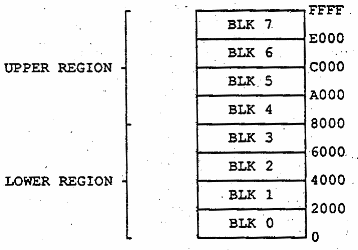

| System Specification for C65 | Fred Bowen | March 1, 1991 |
The microprocessor core is actually a C4502R1 with some additional instructions, used to operate the memory mapper.
The former AUG (augment) opcode has been changed to MAP (mapper) and the former NOP (no-operation), has been changed to EOM (end-of-mapping-sequence).
The 4510 memory mapper allows the microprocessor to access up to 1 megabyte of memory. Herel's how. The 6502 microprocessor can only access up to 64K bytes of memory because it only uses addresses of 16 bits. The 4502 is no different, nor is the 4510. But the 4510 memory mapper allows these addresses to be redirected to new physical addresses to access different parts of a much larger memory, within the 64K byte confinement window.
The 64K window his been divided into eight blocks, and two regions, with four blocks in each region. Blocks 0 through 3 are in the "lower" region, and blocks 4 through 7 are in the "upper" region, as shown...

Each block can be Programmed to be "mapped", or "non-mapped" via bits in the mapper's "mask"-registers. NON-MAPPED means, simply, address out equals address in. Therefore, there are still only 64K bytes of non-mapped memory. MAPPED means that address out equals address in plus some offset. The offset is programmed via the mapper's "offset" registers. There are two "offset" registers. One is for the lower region, and one is for the upper region.
The low-order 8 addresses are never mapped. The offsets are only added to the 12 high-order addresses. This means the smallest unit you can map to is 256 bytes, or one page.
The 4510 has an output (NOMAP) which lets the outside world know when the processor is accessing mapped (0) or non-mapped (1) address. This is useful for systems where you may want I/O devices to be at fixed (non-mapped) addresses, and only memory at mapped addresses.
| This page has been created by Sami Rautiainen. | |
| Read the small print. | Last updated May 09, 2002. |